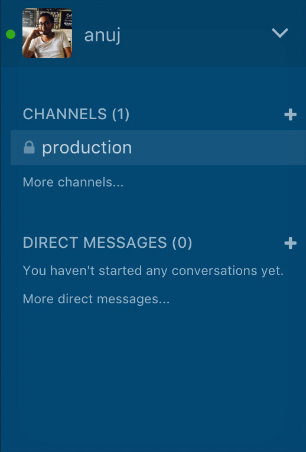

What is Rocket chat?
Rocket.Chat is an open-source web chat platform. CloudFactory currently uses Rocket.Chat to coordinate internally among the core team and its extended workforce and externally with our clients. Clients’ presence iin Rocket.Chat is to faciliate easier communication of business and delivery needs.
Users versed with the popular messaging platform, Slack, will find Rocket.Chat very much similar.
How to Download Rocket.Chat
You can connect to Rocket.Chat in one of three ways - in your browser, computer or mobile. The browser variant is compatible with all popular browsers. Desktop versions are available for Windows, Mac and Linux. Mobile variants can be downloaded from Apple’s App Store or Google’s Play Store.
You can download Rocket.Chat here*: https://rocket.chat/download
*Windows machines have some issues managing multiple instances of Rocket.Chat. You can connect to your instance from the browser or use consolidated messaging app (such as Franz - http://meetfranz.com/)
Connecting to Rocket.Chat
You need to connect to the Rocket.Chat server with your user credentials to start using Rocket.Chat. The following servers are available at present:
- Client’s server: channels.cloudfactory.com
- Internal server: rchat.cloudfactory.com
- Workforce server: workforce.cloudfactory.com

Image: Connecting to Rockethat server
The credentials to log into your Rocket.Chat server will be provided to you by CloudFactory in the form of an invitation. When you log in for the first time, you’ll be required to change the password provided to you in the invite
Rocket.Chat Interface
Once connected to your Rocket.Chat server, your interface will look similar to the following. The examples below depict the desktop app for Mac.

Image: Rockethat interface
The interface is divided into four major panels; they are listed below from left to right:
-
Connected Servers: The leftmost panel with different icons laid vertically shows the different Rocket.Chat servers you’re connected to. To move between servers, just click on its respective icon.
-
Channels, Groups and Direct Messages: The panel adjacent to the right shows your channels, private groups and direct messages. There are group or direct correspondence organized by different chat rooms.
-
Chat window: The main center pane shows the actual conversation depending on the channel or group you’ve selected. Fly in panel: The rightmost pane, again of vertically stacked icons, are like drawers each of which houses a particular functionality like search, attachment, etc. These functionalities can be refereed to as channels operations.
Changing your Profile
If you want to update your profile - say fill in some details, put a cool profile picture, change your notification settings, then you can do so by going to My Accounts.

Image: My account
In the Preferences tab, see above, you can customize your Rocket.Chat experience such as general layout, notification settings, etc
Highlights
Under My Account > Preferences, there’s an option that allows you to receive an email alert every time certain keywords are mentioned. This is called Highlights. Highlighted words are searched across all conversations (channels, groups) you’re a part of. You can put multiple highlighted words, just use comma to separate. Finally, highlighted words are case insensitive.

Image: Highlighted words in Rocket.Chat